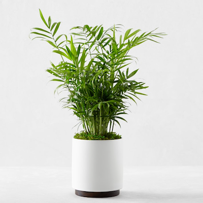
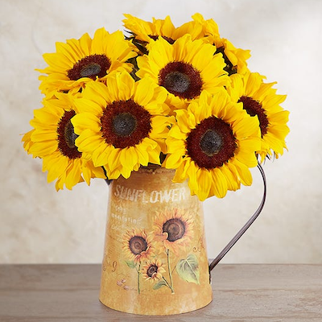
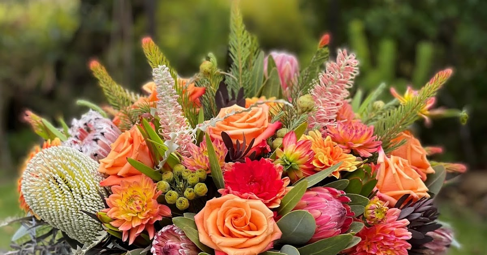

Ceramic Potted Herbs
$7.99
Was $17.99
Brightening San Francisco since 1995

Fran's Flowers was founded in 1995 by Francine Miller to share joy, beauty, and connection with the Mission District of San Francisco. Thirty years later we remain rooted in that vision, brightening lives with every bouquet while supporting our community. Ten percent of each sale continues to fund efforts to fight homelessness across the Bay Area.
Read Our Full Story →



Celebrate the changing seasons with our handcrafted signature harvest bundle. Combining locally grown deep orange marigolds, rich crimson roses, and structural dried wheat stalks, this arrangement brings natural warmth to any space.
Pro-Tip: Absolute best choice for autumn birthdays and cozy host gifts!
"Fran’s created the arrangements for our anniversary, and they were breathtaking. You can truly tell how much care goes into every stem. Plus, knowing 10% goes back to the community makes supporting them an easy choice."
— Elena K., Mission District
"The Wildflower Explosion bouquet completely transformed our living room space. The flowers lasted over two weeks, fresh and vibrant. This shop is an absolute gemstone on Valencia Street!"
— Marcus T., Noe Valley
Come in and say hi!
Call us at 123-456-7890